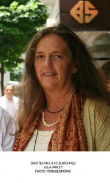

Seminar: Kompetanse for mangfold del 2 - Arbeidsvisning
- Kategori:
- Åpne arrangementer
Åpne arrangementer
Åpent for alle som jobber innen kulturfeltet, inkludert studenter. - Dato:
- 09.11.2015 til 09.11.2015
- Start kl :
- 17:00
- Slutt kl :
- 00:00
- Adresse:
- Dramatikkens Hus, Grønland (Tøyenbekken 34), Oslo
9. november arrangerer forskningsgruppa Utsnidt seminaret Kompetanse for mangfold i Teatersalen i Nynorskens hus. Blant bidragsyterne er Eugenio Barba og Julia Varley; Heidi Haraldsen, prosjektleder for Kunsthøgskolen i Oslos PPU-program, og mange flere. Utsnidt er et samarbeid mellom institusjonene Kunsthøgskolen i Oslo, HiOA, UiS og Tekstlab v/Artxchange.
{kind=link}
Seminaret, inkludert lunsj og kaffe er gratis. Påmelding innen 2. november.
OBS: separat påmelding for del 1 og del 2.
Påmelding gjøres her: http://www.skuespillersenter.no/pamelding/
N.B.: Studenter fra Khio og HiOA og de som er påmeldt gjennom Tekstlab trenger ikke å melde seg på gjennom oss i tillegg.
Program del 2
1700: Arbeidsdemonstrasjon med Julia Varley fra ODIN TEATRET: The flying carpet (på engelsk).
Varighet: ca. 1 time (NB på Dramatikkens hus)
Videre program 9. november i samarbeid med TekstLab:
1900: Offisiell åpning av TekstLab Scratch Festival med Eugenio Barba, kunstnerisk leder av ODIN TEATRET: Theatre as a cultural catalyst: foredrag, film og diskusjon (på engelsk).
For mer informasjon om TekstLab Scratch Festival 6.-16. november, se fullt festivalprogram: www.tekstlab.com/festival/
Velkommen!
Med støtte fra og/eller i samarbeid med: Utdanningsdirektoratet, Khio, Hioa, UiS, TekstLab, Skuespillersenteret, Nynorskens hus, Den mangfaldige scenen og Dramatikkens hus.
www.khio.no/kompetanseformangfold


{kind=link}
{kind=link}
{kind=link}
{kind=link}
{kind=link}
{kind=link}